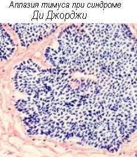
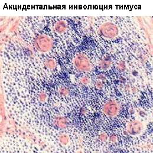

Первичные Т-клеточные иммунодефициты.
Проявления Т-клеточных иммунодефицитов включают:- наклонность к хронически-прогрессирующему или тяжёлому острому течению инфекций, вызванных условно патогенными микроорганизмами и внутриклеточными паразитами (микобактерии, грибки, вирусы, простейшие)
- снижение способности к ГЗТ, выявляемое как анергия при кожных аллерготестах
- реакции трансплантат против хозяина при переливании донорской крови и пересадках тканей
- заболевания, вызванные живыми ослабленными вакцинами (например, БЦЖ или противополиомиелитной)
- повышение частоты онкологической патологии
- нередко, истощение, задержку физического развития, хронические диарреи
Классическим изолированным нарушением тимус-зависимого иммунитета проявляется синдром Ди Джорджа - врождённая гипоплазия вилочковой железы. Это - основанная на хромосомной аберрации эмбриопатия, затрагивающая дериваты 3-го и 4-го глоточных карманов - паращитовидные железы, тимус и, часто также дугу аорты. Болезнь сопровождается стигмами челюстно-лицевого дизэмбриогенеза: гипертелоризмом, низко посаженными ушными раковинами, выступающим лбом, микрогнатией, коротким фильтрумом, а также сердечно-сосудистыми нарушениями (двойная дуга аорты и декстропозиция сердца) и гипокальциемической гиперфосфатемической тетанией. Иногда находят трахео-эзофагальный свищ. Иммунологически болезнь характеризуется снижением или отсутствием Т-клеточного иммунитета, при сохранной функции В-лимфоцитов. Трасплантация тимуса приносит хороший лечебный эффект. В лимфоидных органах и периферической крови отсутствуют Т-лимфоциты, но имеются В-лимфоидные фолликулы и циркулирующие В-лимфоциты вырабатывают достаточно иммуноглобулинов. Инфекционный синдром характеризуется атипичными микобактериозами, кандидамикозом и коккцидиозом, могут развиваться туберкулёз, вирусные инфекции, в частности, системные герпетические и цитомегаловирусные поражения и многоочаговый прогрессирующий лейкоэнцефалит, вызванный паповавирусами. Характерны интерстициальные пневмоцистные пневмонии, которые протекают с выраженной дыхательной недостаточностью, но без внутриальвеолярного экссудата и, следовательно, без яркой физикальной и рентгеновской симптоматики.
Синдром Незелоффа - представляет собой изолированную гипоплазию тимуса и недостаточность Т-клеток, без сопутствующих челюстно-лицевых, сердечно-сосудистых и эндокринных аномалий. Степень гипоплазии тимуса меньшая, присутствуют тимические эпителиальные клетки, но функции Т-клеток и их численность глубоко недостаточны. Часто имеется компенсаторная гипергаммаглобулинемия. Синдром является группой наследственных нарушений ранних стадий дифференцировки Т-клеток с аутосомно-рецессивным или сцепленным с Х-хромосомой наследованием.


Дефицит пуриннуклеозидфосфорилазы (ПНФ) может наблюдаться при синдроме Незелоффа и самостоятельно. ПНФ - энзим, катализирующий важный этап пуринового обмена: превращение дезоксигуанозина и дезоксиинозина в гуанин и гипоксантин. Гипоксантин затем может образовавать ксантин и мочевую кислоту. При его дефиците дезоксинуклеозиды накапливаются, образуют фосфорилированные формы, и избыток дезокси-ГТФ может ингибировать рибонуклеотидредуктазу, что ведет к торможению синтеза ДНК и замедлению репликации клеток (А. Уэбстер, 1982; И.Х. Фокс, 1981). ПНФ имеется во всех клетках, но при её дефиците Т-лимфоциты страдают больше других, так как именно в них минимальна активность другого фермента - 5’-нуклеотидазы, выполняющей при дефиците ПНФ компенсаторную функцию и разрушающей избыток дезокси-ГТФ (Ф. Розен, 1994). Болезнь наследуется аутосомно-рецессивно и зависит от мутации в хромосоме 14. Полной аплазии тимуса не происходит, там даже обнаруживаются тельца Гассаля. Однако, имеется значительное снижение числа Т-клеток в тимусе и периферической крови, сочетающееся с возрастанием содержания нормальных киллеров. Параллельно иммунологическим нарушениям и оппортунистической инфекции, развиваются спастические парезы и гипотонус, гемоцитопения смешанной (аутоиммунной и апластической) природы, гипоурикемия. При хрящево-волосяной дисплазии и синдроме коротконогих карликов (аутосомно - рецессивные нарушения) у больных наблюдаются истончение и оскудение волос, карликовость с укороченными конечностями, сверхподвижность суставов, кистозно-склеротическая остеохондропатия. Иммунологические нарушения аналогичны синдрому Ди Джорджа. В клетках иммунной системы и фибробластах резко удлинена G1-фаза клеточного цикла. Синдром часто встречается в общине амишей в США, вследствие близкородственных браков (инбридинг). Кандидамикоз часто сопутствует Т-клеточным и смешанным иммунодефицитам, а также дефектам терминальных звеньев системы комплемента. Так как это нередко сочетается с дефицитом или дефектами репертуара Т-супрессоров, картину могут дополнять аутоиммунные нарушения. Одна из форм кандидамикоза - кожно-мышечный кандидамикоз - тесно связана с генетическим дефектом способности Т-лимфоцитов производить один из цитокинов - фактор ингибирования миграции (MIF) и наследуется аутосомно-рецессивно. Данный иммунодефицит носит ограниченный характер и не сопровождается отсутствием иммунитета к вирусным и бактериальным инфекциям. Однако, регулярно встречаются аутоиммунные эндокринопатии и железодефицитные состояния.
|
|
|
|
|
|